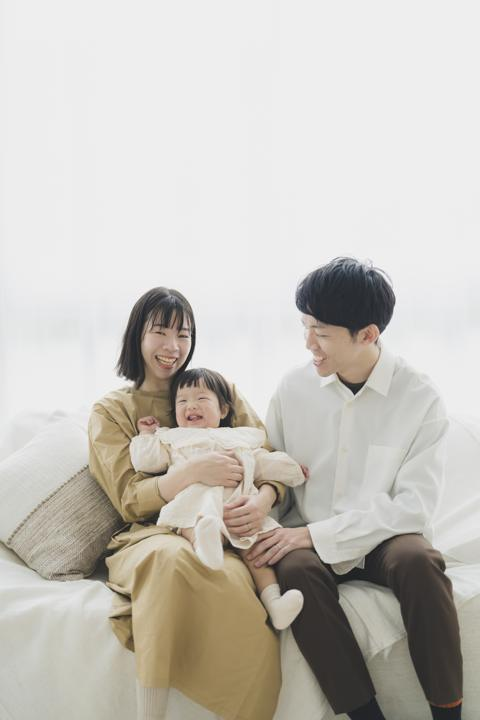
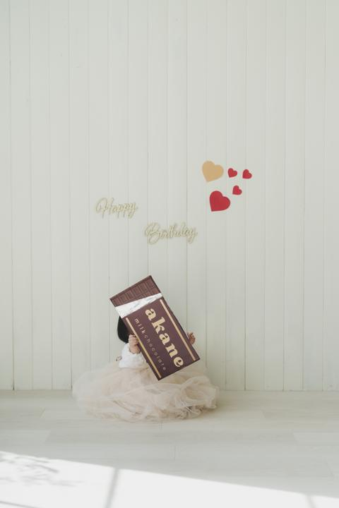
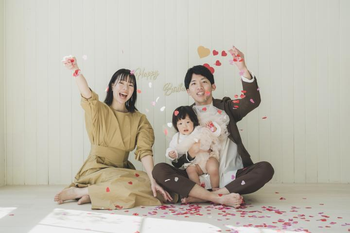

参考：茜音のときF1
家族で座ってる写真
最優先- A. ソファに横並び：パパ・ママの間に茜音、佳純はママのひざ。全員カメラ目線の1枚を最初に
- B. 床にぺたんと座る：パパのあぐらに茜音、ママのひざに佳純。少し引いて白い床を広く入れる
- C. 寄り：顔を近づけて佳純を囲む（参考：茜音のとき 0013 の寄り）
👀 目線は、カメラの真上でママかパパの片方が呼びかけると揃いやすいです
この順番どおりに進めれば、撮りたいショットが全部そろう段取りにしています
時間は目安です。佳純がぐずったら、②の「抱っこ」（S5）か休憩に飛んで立て直します。
いちばん大事なパートです。全員の機嫌がいいうちに撮りきります。

参考：茜音のとき 参考：茜音のとき
参考：茜音のとき 参考：茜音のとき
参考：茜音のとき集中力が続く順に並べています。カメラの後ろで、茜音とパパが盛り上げ役です。
 参考：茜音のとき
参考：茜音のとき 参考：茜音のとき
参考：茜音のとき 参考：茜音のとき
参考：茜音のとき
参考：茜音のとき 参考：茜音のとき
参考：茜音のとき 参考：茜音のとき
参考：茜音のとき 参考：茜音のとき
参考：茜音のとき 参考：茜音のとき
参考：茜音のときハロウィン生まれの佳純だけの特別カット。最後のパートなので短く撮りきります。
F1〜F3 で時間が余ったら、または撮影の合間に。上から順におすすめです。
4人が床に寝転んで頭を真ん中に寄せ、カメラマンさんは脚立か椅子の上から。1歳でもじっとしなくていいので撮りやすい構図です。

茜音のときいちばん盛り上がった構図（参考 0188〜0192）。茜音に投げる係をしてもらうと、笑顔が自然に出ます。最後に撮ると片付けもラクです。
パパ・茜音・ママで手をつなぎ、ママは佳純を抱っこ。顔が写らなくても家族の雰囲気が残る1枚です。

4人の顔を寄せて胸から上だけ。茜音を真ん中に入れると、お姉ちゃんが主役になれる1枚にもなります。

パパの脚に抱きつく佳純を低い位置から。茜音も反対側の脚にくっつけば姉妹版になります（参考 0086〜0089）。
パパが茜音を肩車、ママが佳純を抱っこ。高さに差が出て、動きのある楽しい1枚になります。